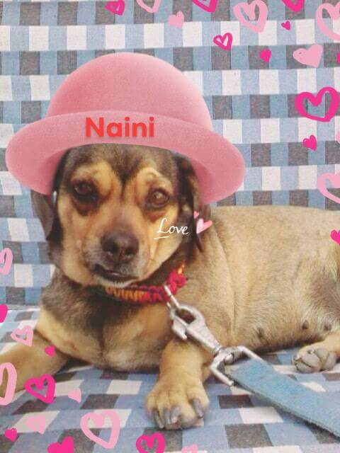
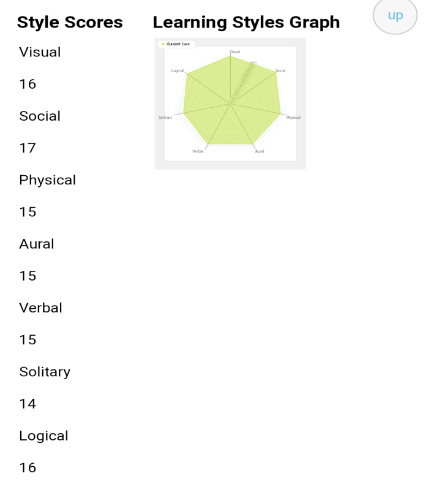
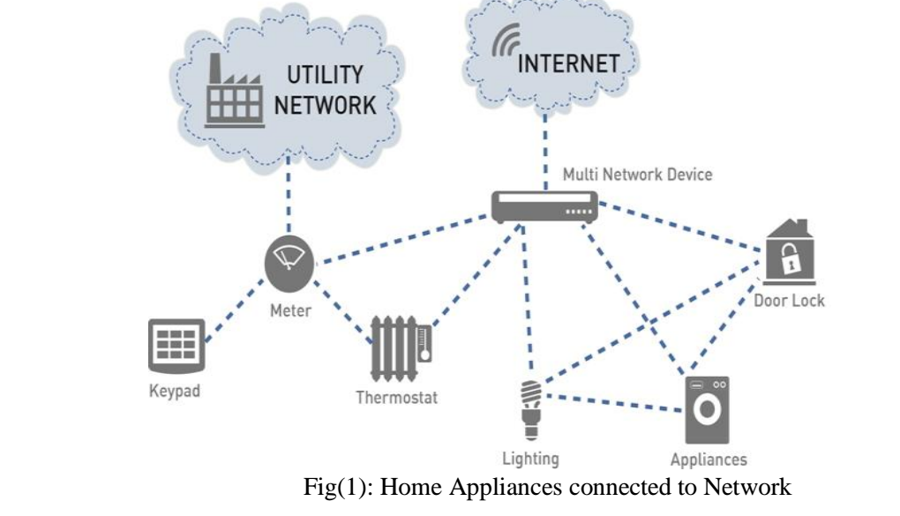
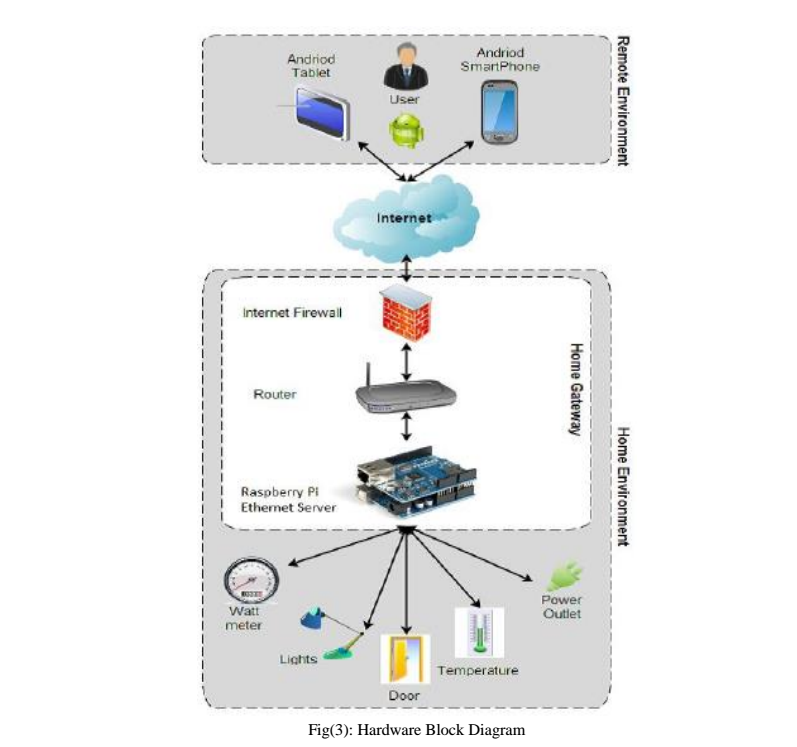

WELCOME TO MY PROFILE
Talking about my education, I have passed my matriculation with 82% and senior secondary in Non- Medical stream with 73% from India and then came here in Australia for further studies.
When we talk about further studies, questions which pop-up in our mind are: Why Australia? Why Melbourne? Why IT? and last but not least, Why RMIT?!! Honestly speaking I love AUSTRALIA. It’s like an island, a very very beautiful place but most important it provides quality education to the students. After a lot of researches and comparisons I chose RMIT for brightening up my future in IT sector. I have a keen interest in Information Technology, specially to learn the whole technological and sophisticated world, like how the sensors work, how doors automatically get opened when we go close to them and what not!!
I shall come to learn a lot of skills and qualities from my studies like team management, team work, leading qualities, maintenance of projects, broadening the horizons of knowledge and many more.
This is what we are looking for, studying for and just because of this, students like me living away from their parents to make their future bright and secure. After graduating I shall also look for an ideal job. Many things will happen in future. We can’t predict them. Many of us think about something else and result comes absolutely different from that. But everybody dreams about their future, their job and so as me. I also want a good job related to designing. It could be a web designing or a product designing or designing different type of gadgets. I would like to work as a project manager or we can say a project leader. This is really most appealing post to me because as an extrovert, I like to work in team , with friends or colleagues and most importantly, it will help me a lot to improve and enhance my skills and knowledge, getting plethora of ideas from teammates.
Although it requires a well qualification, some experience, qualities, skills and understanding of various things but it will brighten up an individual by passage of time. A person has to get experience of almost 7-8 years by working under a leader (boss) or with their teammates.
I am just studying about IT without any experience. Apart from this, I think that I have some qualities like team management and leadership qualities.
As far as the plan for getting these experiences, skills and qualities is concerned, after graduating I shall get experience and improve myself by working in Melbourne on a work permit and after returning to my home country I shall look for job opportunities in MNCs. After getting sufficient and satisfying experience, I shall go for my dreamt post.
When it comes to my family, I have a nuclear family consisting of 5 members including me (My parents, a younger sister, brother and me).
I love pets, especially dogs and I have that too. Her name is Naini. She is 5 years old, cute, brown colored, mischievous pet. 
I played basketball also till my high school and went to some tournaments. I enjoyed a lot while playing basketball sometimes with friends and my coach as well.
I belong to Sikh religion. I am a Punjabi girl.
I can speak three languages (Punjabi- my mother tongue, English and Hindi).
Personal profile
Myers-Briggs test- To know the results click here https://www.16personalities.com/profiles/1d8060a536af9
Learning style test- here are some screenshots of my result

Big five personality test- To know this result click on this link below http://psychologytoday.tests.com/results.htm
Talking about the effects of these tests on me, it will help me a lot to work on my personality to enhance it. It reflected my strengths and weaknesses and I came to know about myself.
As per me, these tests will influence my behavior in team at a very large extent as the improvement will take place in my personality it will automatically influence my behavior.
At the point of view of forming a team, I should deeply take these results into my account. These results are giving me a brief knowledge of my behavior, strengths and weaknesses. After working on those I could make a great team and personality.
Project ideas
Here I am going to talk about my project and its ideas. My project will be based on RASPBERRY PI. I am fairly new to it but I shall love to make a raspberry pi home automation with wireless sensors using Smartphone
Abstract: the project presents a low cost and flexible home control and monitoring system using an embedded microprocessor and micro controller, with IP connectivity for accessing and controlling devices and appliances remotely using Smartphone application. The proposed system does not require a dedicated server pc with respect to similar systems and offers a novel communication protocol to monitor and control the home environment with more than just the switching functionality. To demonstrate the feasibility and effectiveness of this system, devices such as light switches, power plug, temperature sensor and current sensor can be integrated with the home control system.
The internet of things (IoT) can be described as connecting everyday objects like smart phones, internet TVs , sensors and actuators to the internet where the devices are intelligently linked together enabling new forms of communication between things and people, and between things themselves. Building IoT has advanced significantly in the last couple pf years since it has added a new dimension to the world of information and communication technologies.
The internet has come a long way over the last 30 years. Old fashioned IPv4 is giving way to IPv6 so that every device on the internet can have its own IP address. Machine to machine (M2M) communication is on the rise, enabling devices to exchange and act upon information without a person ever being involved. The scope and scale of the internet have changed as well: industry leaders predict that the number of connected devices will surpass 15 billion nodes by 2015 and reach over 50 billion by 2020. The challenge for the embedded industry is to unlock the value of this growing interconnected web of devices, often referred to as the internet of things (IoT), describing it as the ultimate tool in our future surveillance. This network has the power to reshape our cities.
At the edge of the IoT are the appliances and equipment we use everyday. These “things” are interconnected across an infrastructure of backbone using combinations of ZigBee, sub-GHz, Wi-Fi or power line communications(PLC) connectivity to provide a robust bi-directional communications link with relatively long range, low latency for fast responsiveness, low power and a sufficient data rate to aggregate information from many connected devices. This infrastructure also serves as the gateway to the internet and enables remote monitoring and control of devices by other networks, utility companies and end users.
Home automation or smart homes can be described as introduction of technology within the home environment to provide convenience, comfort, security and energy efficiency to its occupants. Adding intelligence to home environment can provide increased quality of life. With the introduction of the IoT, the research and implementation of home automation are getting more popular. 
The introduction of home automation in the 1970s failed to improve the life styles of users for several reasons. Firstly, determining economic benefits of home automation technologies is difficult. Secondly, the costs of implementing smart home technology must be justified by the effects brought about by their installation. There is a infrastructures and appliances.
In 2003, housing learning and improvement network published a smart home definition offered by interetec which states that a smart home is “a dwelling incorporating a communications network that connects the key electrical appliances and services , and allows them to be remotely controlled, monitored or accessed”. The following section includes a brief summary of previous research into smart homes within the past decade.
In 1995, welfare techno houses were constructed in Japan. The purpose of these experiments was to provide health monitoring for elderly and disabled person at home by using fully automated measurements to support daily health care and improve quality of life. The University of Texas at Arlington has conducted the MavHome project over the past 7 years. The MavHome (Managing and Adaptive Versatile home) is a home environment that detects environment states through sensors and intelligently acts upon the environment though controllers. The sensors in the home form and adhoc network with interconnect together to make appropriate decisions.
The focus of my project is on helping users to operate home appliances with their own smart phones and to help elderly or handicapped people live a more independent life as long as possible. The objective of our system is to take care of several domestic systems that may normally be difficult for those who are handicap or elderly to take care of. The proposed idea will allow a user with any android enabled device to run a piece of downloadable software on any mobile device such as smart phones. This application will allow the user to control a device that is connected to any home appliance that is Pi enabled. The focus of this application will be to direct a security system with Webcam surveillance, door sensor notification and light control system. Sensors will be connected to the home appliances with Pi so that they can be monitored and controlled.
Suppose an employee who has gone to work and during this period a thief sneaks up into the house breaking through a window. The proposed system would enable the client to monitor his home when a door or a window sensor triggers the alarm. Client monitors his home with web cam and could immediately inform local authority or a policeman.
The client could also check the status of the outside light and turn on and off the light without the need to get out of bed. These devices would also benefit users with limited mobility that may have a difficult time getting to or even reaching their light switch. These objectives require a large amount of technology. The user interface must be as simple and powerful as possible and operate in a self organized way.
Raspberry Pi: A microprocessor will interface with the android module to perform the automation. A simple microprocessor will receive signals from the Smartphone and it will be processed.
Development software interface mobile device: An android application to be developed using the ADT (android developer tools) java platform for programs running on mobile devices that communicates between Pi and home devices easily.
Integrate the sensors to a device: The raspberry Pi needs to be integrates with the lighting, door sensors and webcam control systems at a low cost with easily installation.
After extensive research into the products and solutions currently available, the following were chosen to meet our application specific requirements.
Raspberry Pi development board- The raspberry Pi is a credit card sized board computer developed in UK by the raspberry Pi foundation with the intension of promoting the teaching of basic computer science in schools. The raspberry Pi is manufactured in 2 board configuration.
The raspberry Pi has a Broadcom BCM2835 system on a chip (SoC), which includes an ARM1176JZFS 700 MHz processor, video core IV GPU, and was originally shipped with 256 MB of RAM, later upgraded to 512 MB. It does not include a built-in hard disk or solid state drive, but it uses an SDcard for booting and persistent storage. The tools are available for Python as the main programming language.
Magnetic door sensors- this magnetic door sensor is essentially a reed switch, encased in an ABS plastic shell. Normally the read is ‘open’ (no connection between the two wires). The other half is magnet. When the magnet is less than 13 mm away, the reed switch closes. They are often used to detect when a door is open or close. 
Interface: once the template was produced, it was time to integrate all the development work to make a complete interface. The Python code manages the list of controls that are to be displayed to the user. The software package provides various views to control different aspects of the controls, such as how they are managed and how they appear on specific client software. The servlet application runs on open Shift can provide more powerful application, a more advanced user interface was created.
Software: the backend code that we produced for the applications is explained in the next section. The server and client application is written using python code as the interface for raspberry pi to connect to lights and sensors.
Hardware: the next step was the integration of the electronic components into our raspberry pi and setting it up for remote access. Here we use a Dlink 2750u router that5 has a ISP connection. The hardware interaction takes place through wifi wherein all devices are connected to the RPi through Ethernet. The android application controls the integrated peripherals such as camera, door sensors and lighting devices.
Although the final products were very successful at accomplishing the objectives, it must be kept in mind that the products produced are simple prototypes and much more work would need to be done to create a marketable product. Several areas that need to be improved are the size of the devices, the cost of the devices, the power sources used and the range of communication.
Currently, the Raspberry device is too large to fit easily into a pre-existing wall switch electrical box. There are several ways this could be improved in future work. The use of surface mount components would dramatically decrease the overall size of the components. Surface mount components are also often less expensive as they require less material to produce. This would help reduce the overall cost of the devices as well as the size. Another area to help improve the size is the circuit board that is used currently for the prototype; a generic breadboard style board was used.
If this device were to be commercially produced, a more compact circuit board could be designed.
Raspberry Pi home automation system with Arduino by Andrew K Dennis.
Magazine for Raspberry Pi users “the MagPi”.
Raspberry Pi architecture by John Holton and Tim Fratangelo ‘the raspberry pi foundation’.
And some other google help.
Thank you